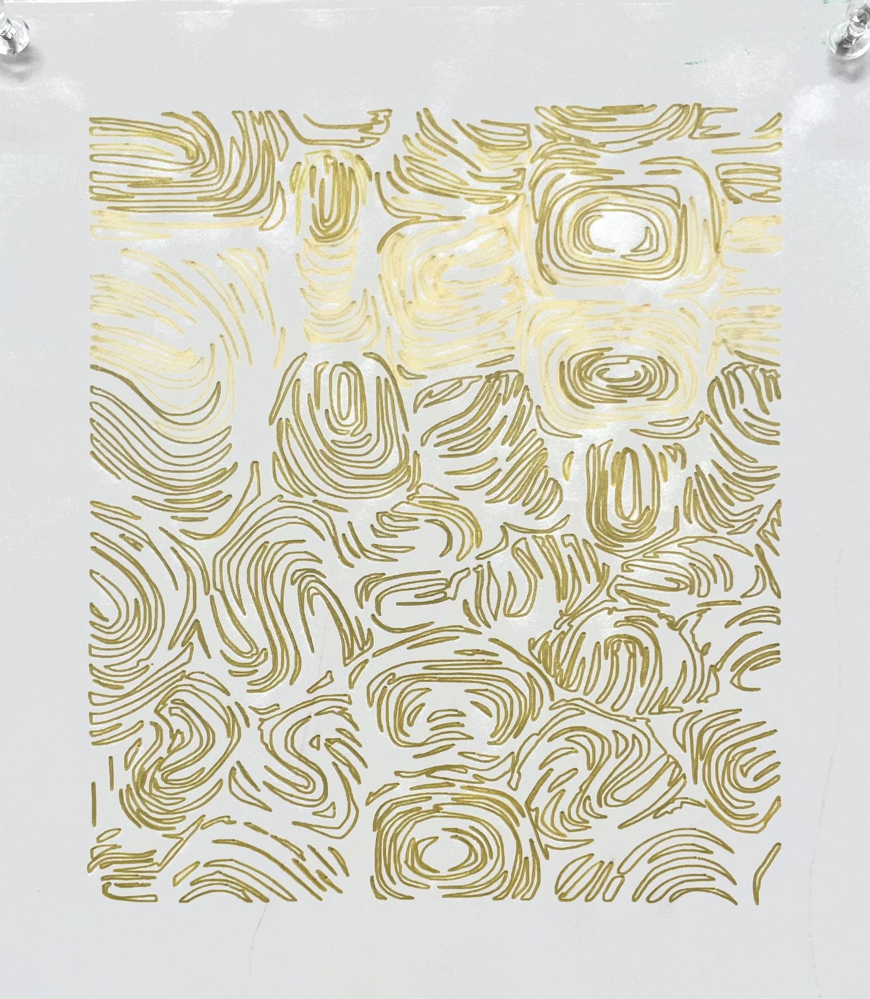
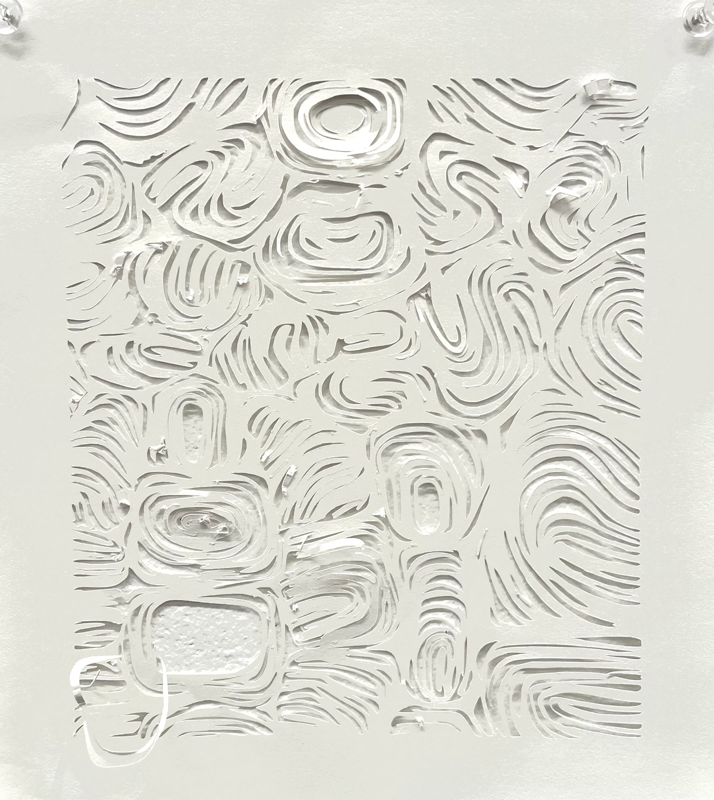
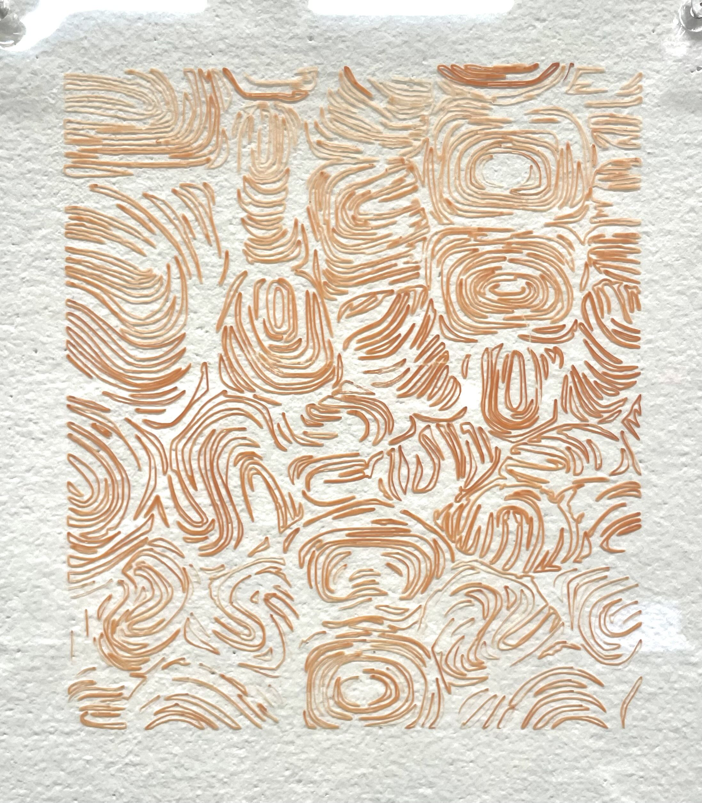
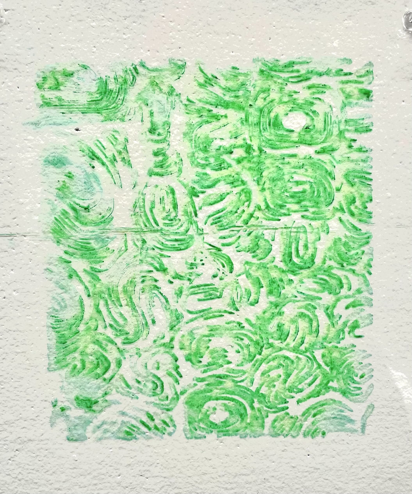
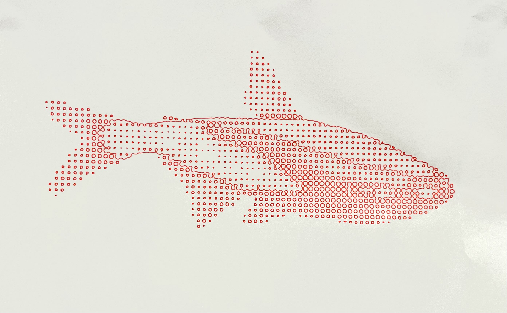
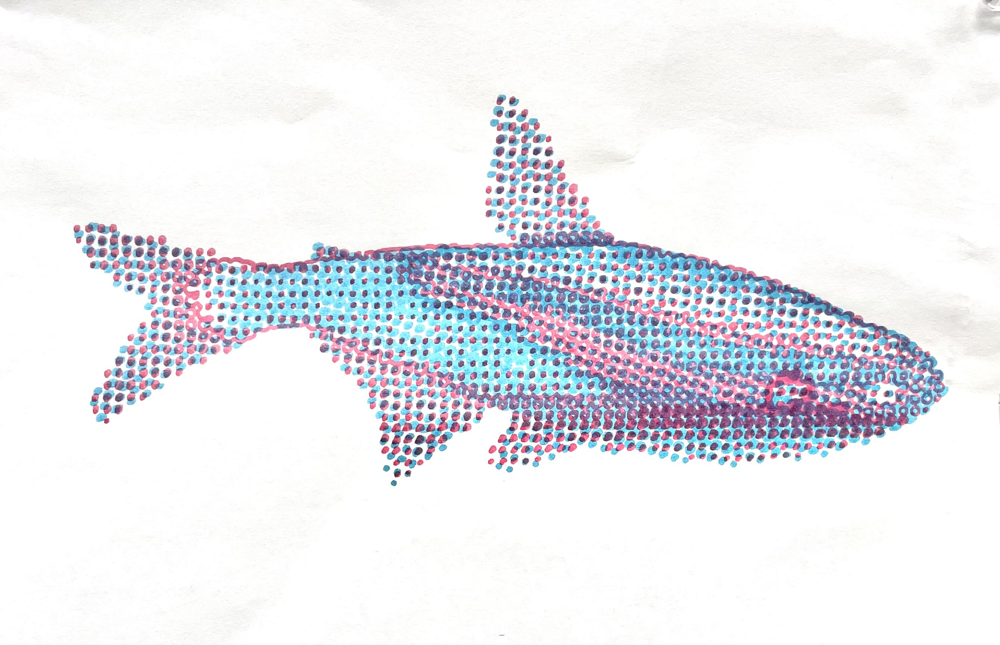

|       |
Since the goal of this assignment was material exploration, I made sure to experiment with a variety of markmaking tools and mediums. I used ballpoint pen, fineliner, burshpens, and a cutter. I image traced a previous artwork (based off of turtle shells) to get a vector pattern in Illustrator. I tried using a regular water-based pen and a paint pen on the duralar, and the paint pen was significantly more successful as the fineline smudged under the plotter. I would be interested in using the plotter technique to create negatives that I could use with cyanotype, as I have found that paint pens are fairly successful in blocking the light neeeded to make prints. For the fish, I used a combination of Photoshop and Illustrator to make two different files for the red and blue filtered versions. To create the dual toned effect, I simply left the paper in the machine and changed out the pen. One disappointing thing about using the brush pens was that I wasn't able to use the full range of line weight that you can usually achieve, mainly because the force of the plotter would inevitably push the pen to the same depth each time. |